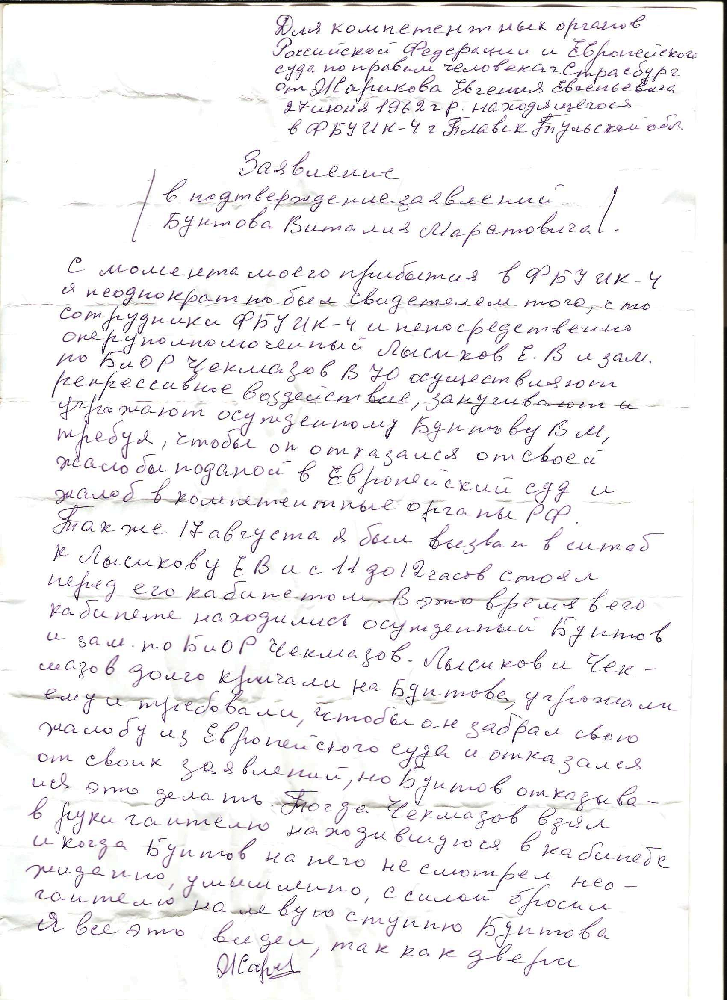
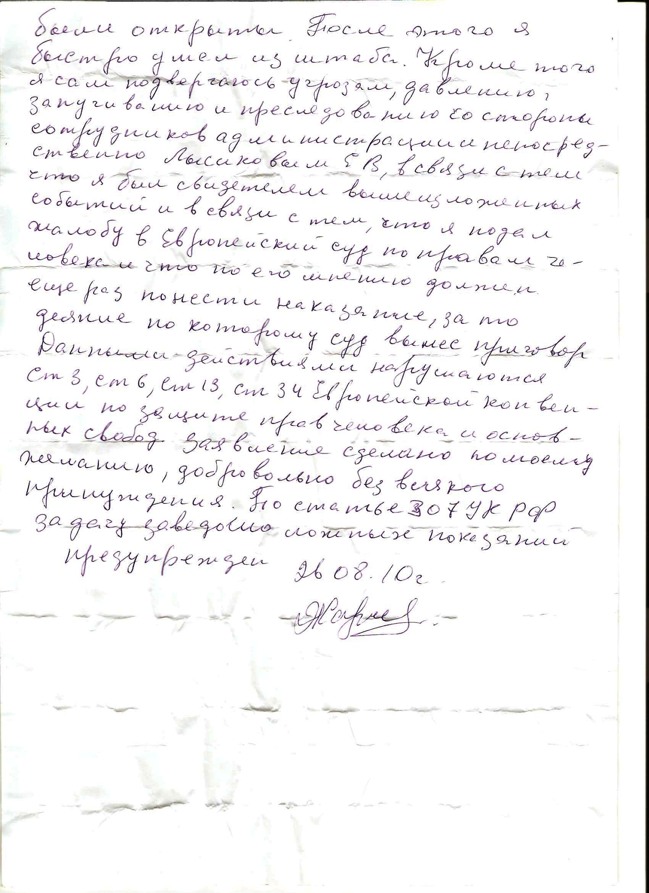

|

- Очерки психологии мировоззрения как основы просветительской практики ( Comments )
- От ничтожности к сопоставимости с Мирозданием или к вопросу о смысле существования человека ( Comments )
- Нобелевская лекция И.П.Павлова 'О русском уме' ( Comments )
- Проект "Бизнес, власть, общественность и СМИ в российской благотворительности" ( Comments )
- Дело Виталия Бунтова ( Comments )
- Дело Егора Новиковского ( Comments )
- Все мы сыны и дочери Человечества, но не собственность возомнивших о себе… ( Comments )
(все новости...)


| Главная-->Pro et contra-->Дело Виталия Бунтова-->Заявление осужденного Жарикова от 26.08.2010 | ||
|
|
-
-
-
-
-
-
-
-
-
Для компетентных органов Российской Федерации и Европейского суда по правам человека, г. Страсбург
-
От Жарикова Евгения Евгеньевича, 27 Июня 1962 г.р., находящегося в ФБУ ИК -4 г. Плавск Тульской области.
-
-
-
-
-
-
-
-
Заявление
(В подтверждение заявлений Бунтова Виталия Маратовича)
С момента моего прибытия в ФБУ ИК -4, я неоднократно был свидетелем того, что сотрудники ФБУ ИК -4 и непосредственно оперуполномоченный Лысиков Е.В и зам .по БиОР Чекмазов. В.Ю. осуществляют репрессивное воздействие, запугивают и угрожают осужденному Бунтову В.М., требуя, чтобы он отказался от своей жалобы, поданной в Европейский суд и жалоб в компетентные органы РФ.
Также 17 августа, я был вызван в штаб к Лысикову Е.В и с 11 до 12 часов стоял перед его кабинетом. В это время в его кабинете находились осужденный Бунтов и зам.по БиОР Чекмазов. Лысиков и Чекмазов долго кричали на Бунтова, угрожали ему и требовали, чтобы он забрал свою жалобу из Европейского суда и отказался от своих заявлений, но Бунтов отказывался это делать. Тогда Чекмазов взял в руки гантелю, находившуюся в кабинете, и, когда Бунтов на него не смотрел, неожиданно, умышленно, с силой бросил гантелю на левую ступню Бунтова.
Я все это видел, так как двери были открыты. После этого я быстро ушел из штаба.
Кроме того, я сам подвергаюсь угрозам, давлению, запугиванию и преследованиям со стороны сотрудников администрации и непосредственно Лысиковым Е.В, в связи с тем, что я был свидетелем вышеизложенных событий и в связи с тем, что я подал жалобу в Европейский суд по правам человека и что, по его мнению, должен еще раз понести наказание за то деяние, по которому суд вынес приговор.
Данными действиями нарушаются ст.3, ст.6, ст. 13, ст. 34 Европейской конвенции по защите прав человека и основных свобод.
Заявление сделано по моему желанию, добровольно без всякого принуждения.
По статье 307 УК РФ за дачу заведомо ложных показаний предупрежден.
26.08.10.г
подпись. Жариков.
|  |  |